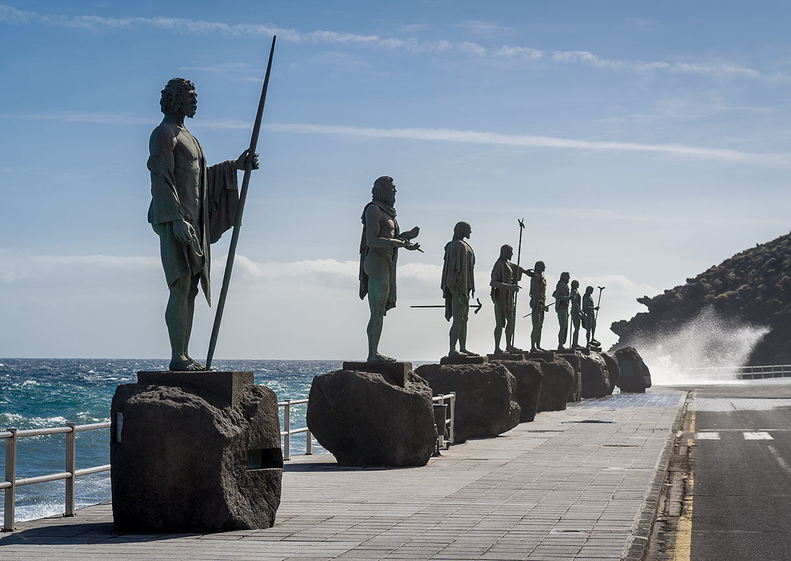
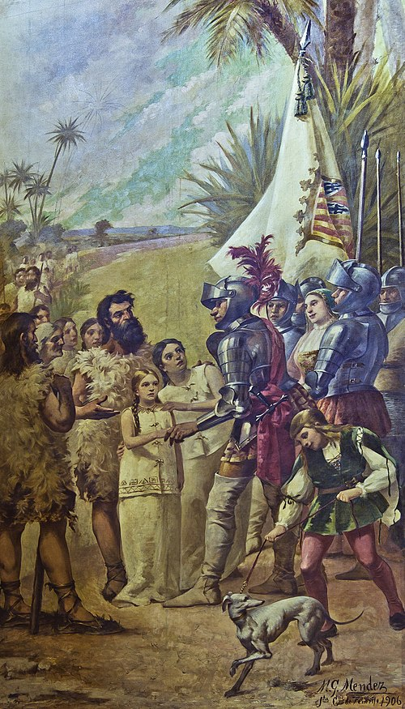

Historia de Tenerife!
Población prehispánica: guanches
Los guanches debieron llegar a Tenerife en un período comprendido desde antes del siglo V a. C. hasta el comienzo de la Era Cristiana. Durante casi 2000 años, poblaron la isla y trataron de adaptarse a sus particularidades medioambientales hasta que en 1496 fueron sometidos por las tropas españolas
La zona arqueológica de la Cueva de los Guanches en el municipio de Icod de los Vinos, ha proporcionado las cronologías más antiguas de Canarias, con dataciones en torno al siglo VI a. C
Respecto al nivel tecnológico, los guanches pueden ser encuadrados entre los pueblos de la Edad de Piedra, si bien esta terminología es rechazada debido a la ambigüedad que presenta. La cultura guanche se caracteriza por un desarrollo cultural avanzado, que posiblemente está en relación con los rasgos culturales bereberes importados desde el norte de África y un desarrollo tecnológico pobre, determinado por la escasez de materias primas, sobre todo de minerales que permitan la extracción de metales. Su actividad principal era el pastoreo, pero también se dedicaban a la agricultura, la recolección, la pesca, marisqueo de orilla o la artesanía.
En cuanto a las creencias, la religión guanche era politeísta aunque el culto astral estaba generalizado. Junto a él había una religiosidad animista que sacralizaba ciertos lugares, fundamentalmente roques y montañas. Entre los principales dioses guanches se podrían destacar; Achamán (dios del cielo y supremo creador), Chaxiraxi (diosa madre identificada más tarde con la Virgen de Candelaria), Magec (dios del sol) y Guayota (el demonio) entre otros muchos dioses y espíritus ancestrales. Especialmente singular era el culto a los muertos, practicándose la momificación de cadáveres. Además, en la isla han aparecido pequeñas figurillas líticas y de arcilla de tipo antropomorfo y zoomorfo asociadas a rituales, interpretados como ídolos. Destaca entre estos el llamado Ídolo de Guatimac, el cual se cree que representa a un genio o espíritu protector.
La sociedad guanche estaba dividida en estratos definidos por la riqueza, en cabezas de ganado especialmente, diferenciándose por un lado la nobleza y por otro el pueblo. La isla se dividía en territorios cuyo rey era el mencey (nombre dado al monarca de los guanches de Tenerife, que regía un menceyato o territorio).
Conquista
Tenerife fue la última isla de Canarias en ser conquistada y la que más tiempo tardó en someterse a las tropas castellanas. Aunque las fechas tradicionales de conquista de Tenerife se establecen entre 1494 (desembarco de Alonso Fernández de Lugo) y 1496 (conquista de la isla), hay que tener en cuenta que los intentos de anexionar la isla de Tenerife a la Corona de Castilla se remontan al menos a 1464. Desde el primer intento de conquistar la isla en 1464, hasta que se conquista definitivamente en 1496 transcurren treinta y dos años.
Ese año de 1464, tiene lugar en el barranco del Bufadero la toma de posesión simbólica de la isla por el señor de las Canarias Diego García de Herrera. Este firma un tratado de paz con los menceyes, permitiéndole poco después el mencey de Anaga construir una torre en sus tierras, donde guanches y europeos tienen tratos hasta que es demolida hacia 1472 por los mismos guanches.
En 1492 el gobernador de Gran Canaria Francisco Maldonado organiza una razia que termina en desastre para los europeos, pues son derrotados por los guanches de Anaga.
En diciembre de 1493, Alonso Fernández de Lugo obtuvo de los Reyes Católicos la confirmación de sus derechos de conquista sobre la isla de Tenerife. En abril de 1494, y procedente de Gran Canaria, desembarcó el conquistador en la costa de la actual Santa Cruz de Tenerife con una tropa de peninsulares y canarios (gomeros y grancanarios, sobre todo) formada por unos 2000 hombres de a pie y 200 a caballo. Tras levantar un fortín se dispuso a adentrarse hacia el interior de la isla.
Los menceyes de la isla de Tenerife tomaron distintas posturas en el momento de la conquista. Se constituyeron así el bando de paz y el bando de guerra, integrado el primero por los menceyatos de, Güímar, Abona y Adeje, y el segundo por Anaga, Tegueste, Tacoronte, Taoro, Icoden y Daute. El bando opositor se enfrentó tenazmente a los castellanos de modo que la conquista tinerfeña se prolongó durante dos años. Las tropas castellanas sufrieron una derrota a manos de los guanches en la Primera Batalla de Acentejo en 1494. Sin embargo, los guanches, superados por la tecnología y por las nuevas enfermedades a las cuales no eran inmunes, cayeron frente a las tropas de la Corona de Castilla en la batalla de Aguere y en la segunda batalla de Acentejo culminando la conquista en septiembre de 1496.
Como en el resto de las islas, muchos de los aborígenes fueron esclavizados, especialmente los pertenecientes al bando de guerra, mientras que buena parte de la población indígena sucumbió a enfermedades importadas como la gripe y, probablemente, la viruela, enfermedades infecciosas para las que aquella sociedad neolítica, debido a su aislamiento, no había desarrollado su sistema inmune. Tras la conquista, y especialmente durante el siglo posterior a ella, se fue produciendo una repoblación y colonización paulatina de la isla con la llegada de inmigrantes provenientes de diversos territorios pertenecientes al incipiente Imperio Español (Portugal, Flandes, Italia, Alemania).
Historia reciente
Otros visitantes menos hostiles llegarían a la isla en siglos sucesivos. En 1799 el naturalista Alexander von Humboldt ascendió el pico del Teide y comentó la belleza de la isla.
Numerosos turistas comenzaron a visitar Tenerife a partir de la década de 1890, especialmente las ciudades norteñas de Puerto de la Cruz (primer municipio turístico de Canarias mediante orden ministerial del 13 de octubre de 1955 que lo declaró Lugar de Interés Turístico) y Santa Cruz de Tenerife.
En marzo de 1936, el general Francisco Franco fue destinado a Tenerife por el gobierno republicano, temeroso de su influencia militar y política, con el fin de alejarlo de los centros de poder.
La colisión entre dos aviones ocurrida el 27 de marzo de 1977 en el aeropuerto de Tenerife Norte, al norte de la isla, sigue siendo el accidente con mayor número de muertos de la historia de la aviación. Los aviones implicados en la tragedia tenían como destino Gran Canaria, pero habían sido desviados a Tenerife debido a la explosión de una bomba (colocada por el grupo terrorista separatista MPAIAC) en el aeropuerto grancanario.
Comenzando el siglo XXI tiene lugar la riada de Tenerife de 2002, el 31 de marzo de ese año. Se trató de un fenómeno de gota fría caracterizado por la caída reiterada de lluvias torrenciales acompañadas de aparato eléctrico, afectando al área metropolitana de Santa Cruz de Tenerife y extendiéndose en dirección NE hacia la zona de San Andrés. Las lluvias ocasionaron 8 muertos, 12 desaparecidos y decenas de heridos. Además de las pérdidas humanas la riada causó cuantiosos daños materiales, 70 000 personas sin luz así como la destrucción total o parcial de al menos 400 viviendas. Las pérdidas se calcularon en 90 millones de euros
Por otro lado en noviembre de 2005, Tenerife fue la isla canaria más afectada por la tormenta tropical Delta. Se llegaron a registrar vientos de 140 km/h en la costa y casi los 250 km/h en el Teide, cumbre de Tenerife.